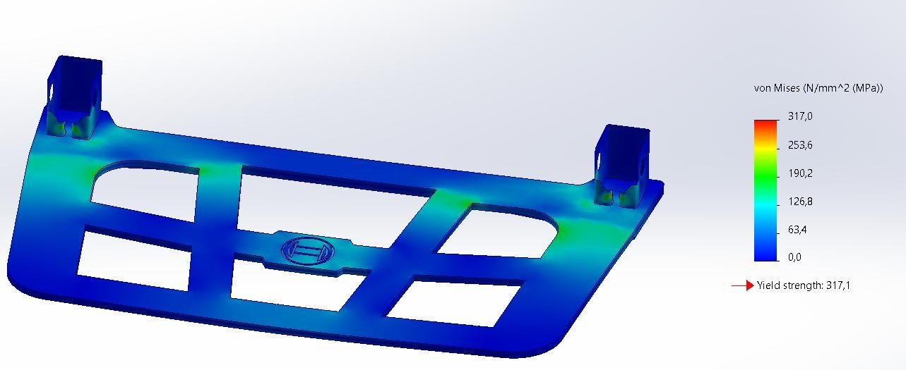
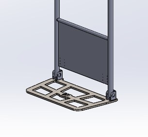
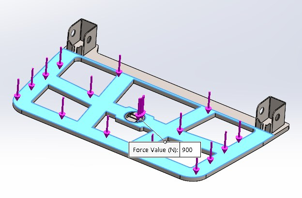
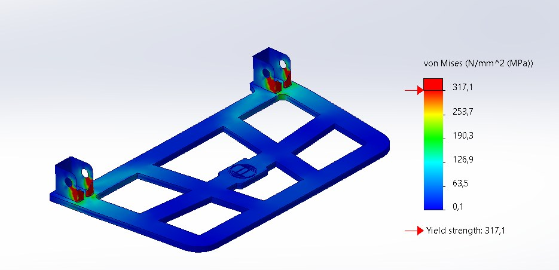
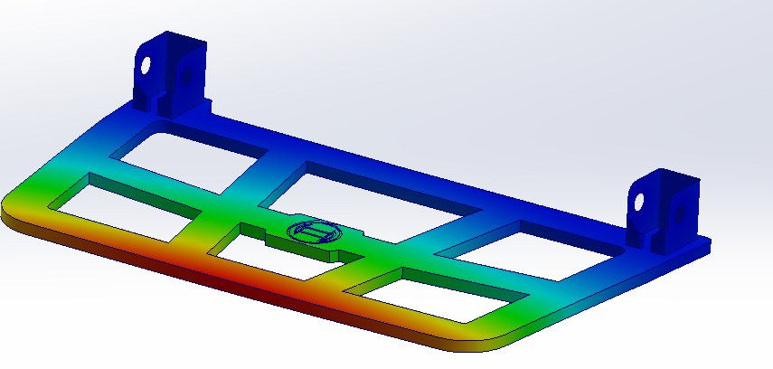
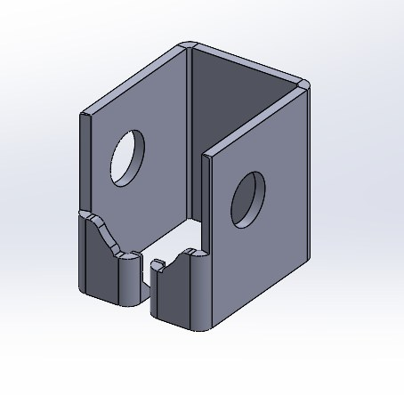
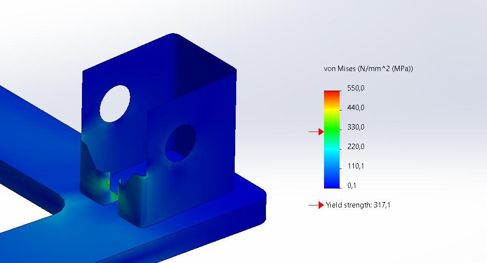
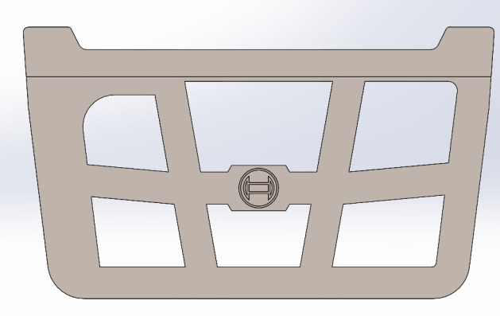
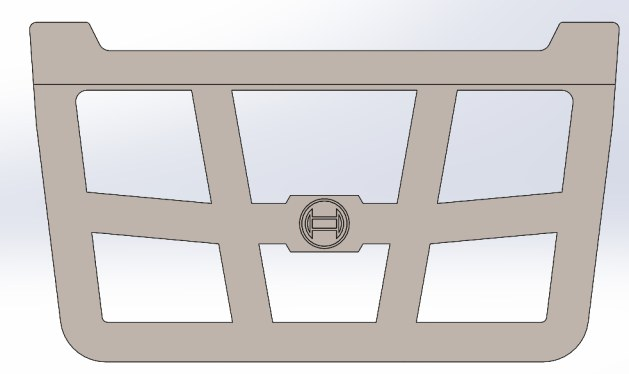
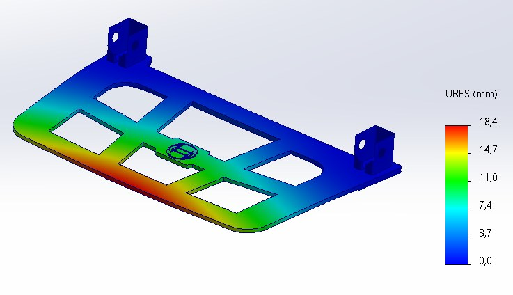

Design optimisation
Een FEM-analyse van de inklapbare laadplaat van een steekwagen. De laadplaat moest kunnen inklappen, maar ik verwachtte dat het scharnier te zwak zou zijn voor de volle last van 90 kg. Met simulaties in SolidWorks heb ik het ontwerp in negen stappen verbeterd tot het de last aankon.
An FEM analysis of the foldable loading plate of a sack truck. The plate had to fold, but I expected the hinge to be too weak for the full 90 kg load. Using simulations in SolidWorks, I improved the design in nine iterations until it could take the load.
SolidWorks Simulation · FEM · MateriaalkeuzeMaterial selection
ProbleemanalyseProblem analysis
Bepaald waar het ontwerp zou bezwijken: de last op de laadplaat komt via een hefboom op het scharnier terecht.
Determined where the design would fail: the load on the plate acts on the hinge through a lever.
FEM-simulatiesFEM simulations
Spanning en doorbuiging berekend in SolidWorks, met 900 N op de laadplaat en de scharnieren vast.
Calculated stress and deflection in SolidWorks, with 900 N on the plate and the hinges fixed.
OptimaliserenOptimisation
Negen ontwerpvarianten getest: een flens op het scharnier, andere diktes en een aangepaste vorm.
Tested nine design variants: a flange on the hinge, different thicknesses and a revised shape.
MateriaalkeuzeMaterial selection
Via MatWeb een plaataluminium gezocht met een vloeigrens boven 550 MPa: Aluminium 7055-T7751 of 7150-T7751.
Used MatWeb to find a sheet aluminium with a yield strength above 550 MPa: Aluminium 7055-T7751 or 7150-T7751.
Een inklapbare laadplaatA foldable loading plate
De steekwagen moet maximaal 90 kg kunnen dragen. In de simulatie heb ik alleen de laadplaat en de scharnieren meegenomen: die zijn met lassen verbonden (bonded) en de scharnieren staan vast. Op de voorkant van de laadplaat staat een kracht van 900 N.
The sack truck has to carry up to 90 kg. In the simulation I only included the loading plate and the hinges: they are welded together (bonded) and the hinges are fixed. A force of 900 N acts on the front of the plate.


Het scharnier bezwijktThe hinge fails
De spanning in het scharnier kwam boven de vloeigrens van het oorspronkelijke aluminium (317 MPa). De laadplaat boog aan het uiteinde 12 mm door en droeg zelf weinig bij aan de sterkte.
The stress in the hinge exceeded the yield strength of the original aluminium (317 MPa). The plate deflected 12 mm at its end and contributed little to the strength.


Een flens en sterker materiaalA flange and a stronger material
Ik gaf het scharnier een flens en 1 mm extra dikte. De doorbuiging zakte naar 9,4 mm, maar de spanning bleef net onder 550 MPa. Daarom heb ik een sterker plaatmateriaal gekozen: Aluminium 7055-T7751 (621–648 MPa) of 7150-T7751 (565–600 MPa).
I gave the hinge a flange and 1 mm extra thickness. Deflection dropped to 9.4 mm, but the stress stayed just under 550 MPa. So I chose a stronger sheet material: Aluminium 7055-T7751 (621–648 MPa) or 7150-T7751 (565–600 MPa).


Lichter én sterk genoegLighter and strong enough
Na verschillende diktes en vormen werd ontwerp 9 het eindresultaat. De laadplaat is nu 6 mm dik in plaats van 10 mm en de zijkanten, waar hij het snelst bezweek, zijn dikker. De plaat buigt 18,4 mm door, maar blijft onder de vloeigrens. Het scharnier houdt nu 90 kg, en het geheel weegt 639 g in plaats van 826 g.
After trying different thicknesses and shapes, design 9 became the final result. The plate is now 6 mm thick instead of 10 mm, and the sides, where it failed first, are thicker. The plate deflects 18.4 mm but stays below the yield strength. The hinge now holds 90 kg, and the assembly weighs 639 g instead of 826 g.


